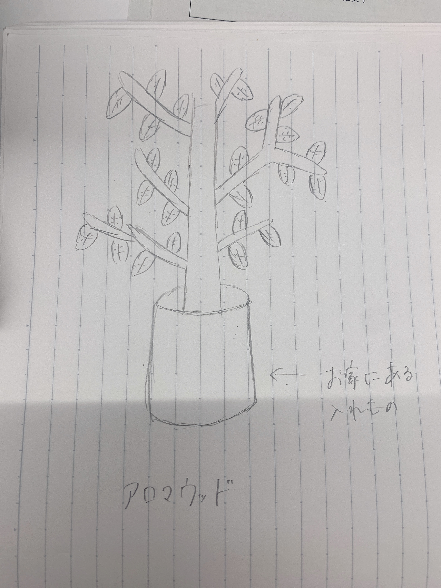

課題１ レーザーカッター
使い方多種多様なwoodtree
【構想段階のスケッチ】

【作った作品の画像】


dxfファイル
【作品の説明】
これは、アクセサリースタンドにもなったり、壁に貼り付けて部屋をアレンジしたり、なにか入れ物に入れて立たせたりしたりなど
使い方は買ってくれた人それぞれの好きなように使えるようになっている。
【なぜ作ろうと思ったのか】
雑貨は生活していく中で、なくても大丈夫なもの、必要ない人には必要とされずに価値が見出されないまま誰かの手元にいかずに
残ってしまうもの。しかし、普段の生活になにかプラスαすることで、自分のお家に帰ったときに癒しや安心、充足感を感じて欲しい、
そんな風に思っておしゃれであったり時には奇抜でおもしろい雑貨が生まれてくると思う。私は雑貨に対してそのような考え方を
持っている。どんな人に必要とされるか分からないけど、誰かの生活の一部に寄り添いたいと思い、この雑貨を作ることにしました。
自分のイメージのままにこの雑貨を色んな用途で使えることに他にはない心わくわくする感じがあると考えた。